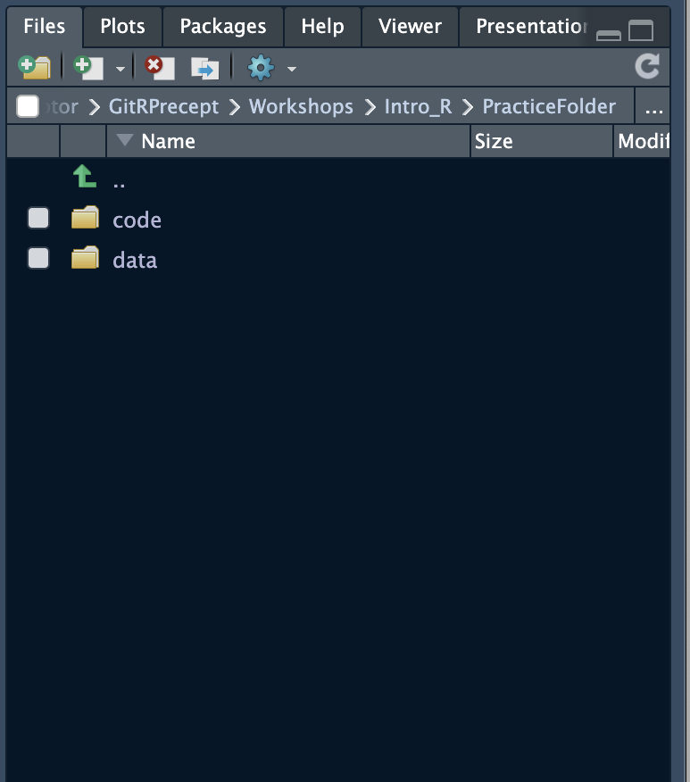
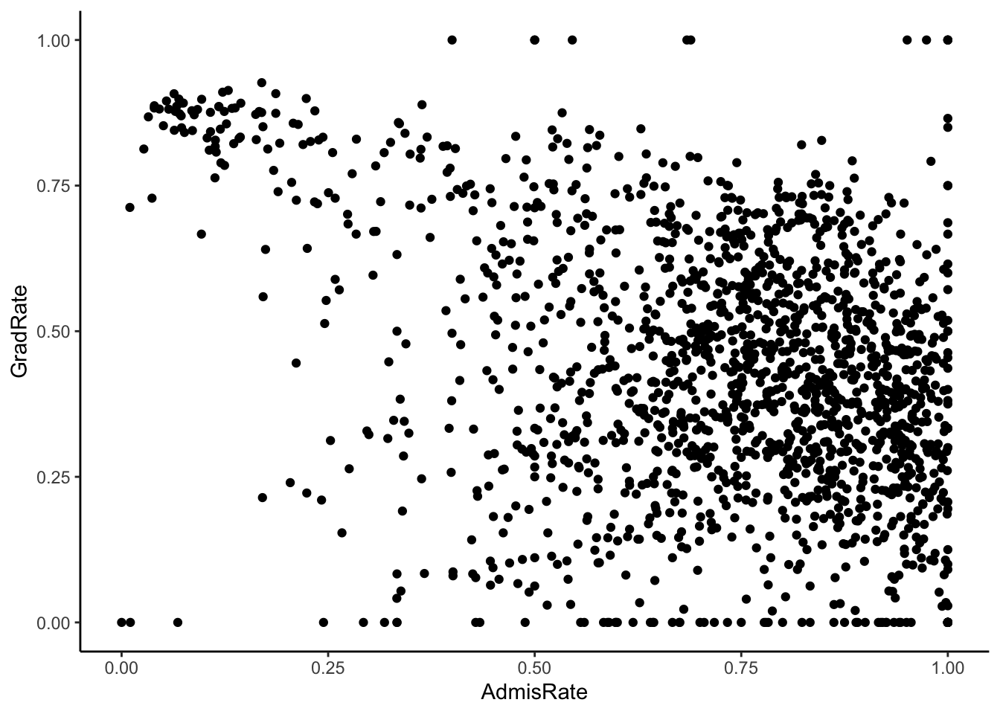
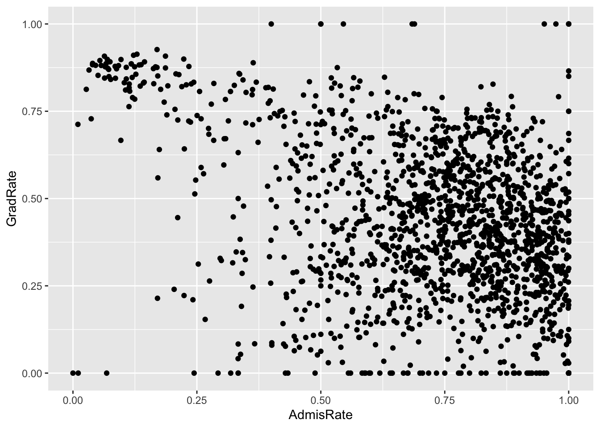
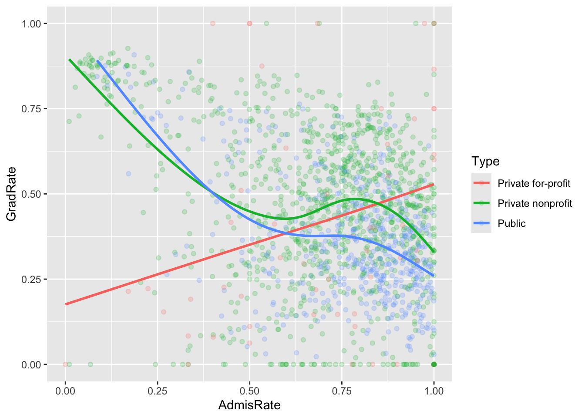
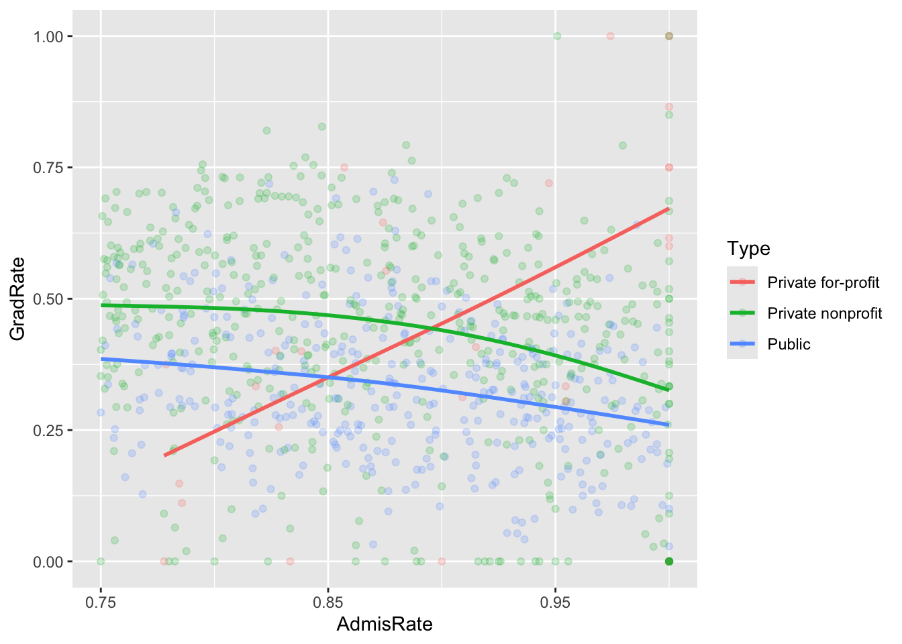
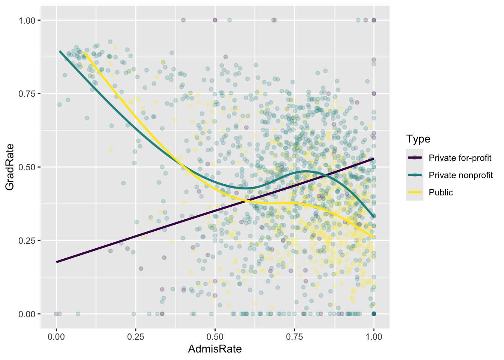
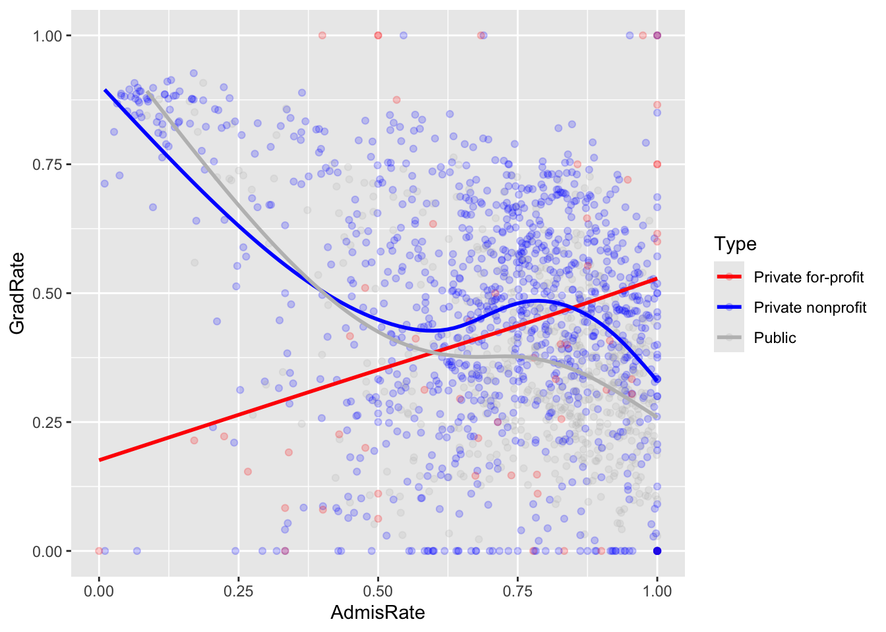
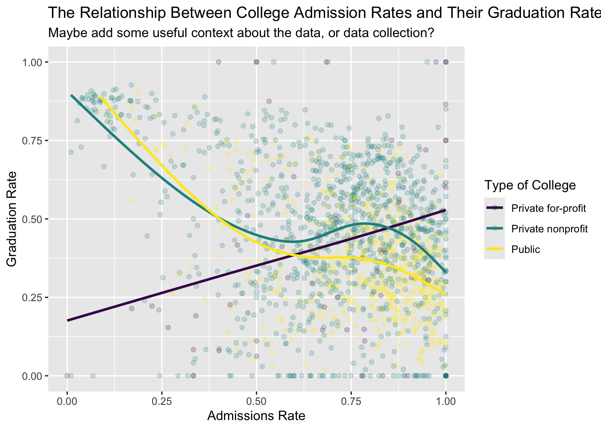
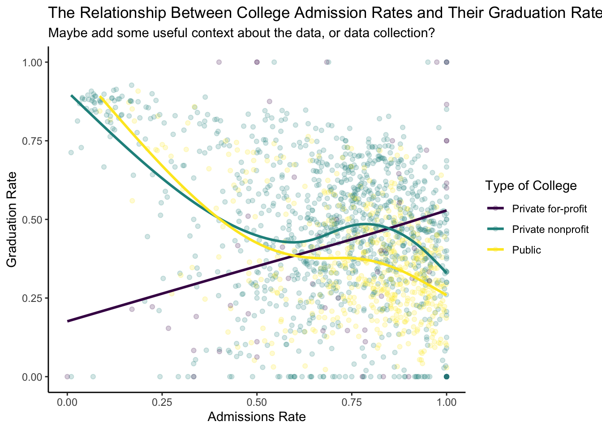
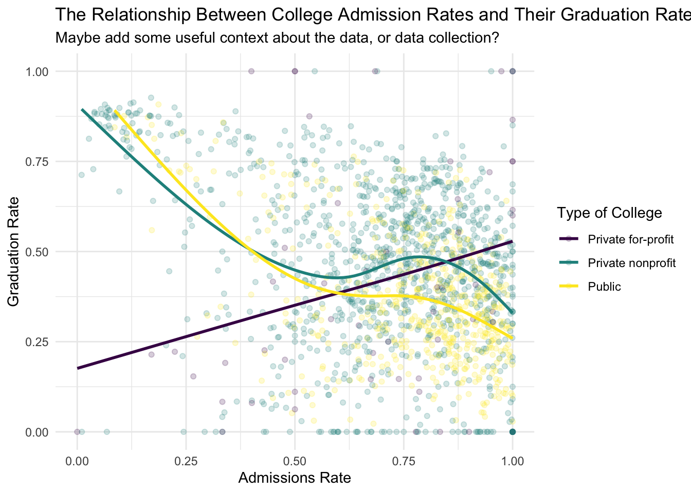

install.packages("ggplot2")Introduction to R/R Studio Supplementary Materials
1 Packages
Before we get any further, one thing to note:
If you see eval=FALSE in a code chunk, do not run the chunk. The code in there is for demonstration purposes only.
1.1 What are R packages, and how do I use them?
An R package is a collection of functions that are all related to each other, published into one package. You can think about all the R packages as books in a bookstore. In order to use one, you need to buy it first.
1.2 Installing, an R package
To “buy” an R package, we need to install it. You should use the “Console” pane to write the code to install packages. The Console is located on the bottom left of your screen.
For example, if we wanted use the ggplot2 package for the first time, type the following code into the console:
Now, we have “bought” the book. But it is now on our bookshelf, so we can’t use it quite yet. To actually use the package, we need to “get it off the bookshelf”. To do this, we will use the library() function:
library(ggplot2)Now we are all set! You can utilize any function from ggplot2 in your code. However, if you quit R Studio, this is effectively like putting the book back on the bookshelf. So the next time you open R Studio, you need to run library() again.
If you forget to do so, you’ll encounter errors like this:
Error in theme() : could not find function “theme”
Here, I tried to run the theme() function from the ggplot2 package, but since I hadn’t ran library(ggplot2) yet, it gives this error.
1.3 Best practices
In general, I would always put all your library statements at the top of your qmd file (or your .R, .rmd file). This keeps things organized, and allows you to quickly have access to all the packages you need whenever you reopen R Studio.
Make sure to never put install.packages() in a .qmd, .rmd, or .R file. Always run this in the console! If you try to render your file, and you have install.packages() somewhere in your file, it will give an error.
2 Reading in Data
2.1 How can I use a dataset from another file in R?
There are many functions you can use to read in data in R, depending upon what file type you have. Here are some examples of reading in data using the most common filetypes.
2.2 File paths
Before we get into examples, we need to understand how to tell the computer where files are.
Whenever you are using a function to read in data (such as read_csv(), read_sheet(), read_excel), you’ll provide the function a filepath, telling the computer which file you want to have it parse into a data frame.
There are a few important things to keep in mind here:
A file path is always a string (it has quotes around it), like “mydata.csv”.
The file path can tell the computer what to do in two ways:
first, we can give the “absolute file path”. The string you would enter as your file path might look something like this: “/Users/kylesuelflow/Macalester-Stuff/STAT_155/data/mydata.csv”
This is really long! We don’t need to do this!
Instead, use relative file paths
Relative paths show the file path relative to where your working directory is.
How do I know where my working directory is?
- Use
getWd()to get your working directory - Whenever you reload R Studio, always go to Session->Set Working Directory->To Source File location.
- This sets your working directory relative to where your .rmd (or .R, .qmd, etc.) is located.
What is the syntax for using relative paths?

In the above folder structure, my code file is in the code folder, and my data set is in the data folder
Since my working directory is set to my code file, in order to access the data, we need to go up a folder
To do this, we’ll use “../data”
The “..” is what moves us up a folder. The “/” gets us inside or down into the data folder
From here, we need to go access the data file in the data folder
We’ll use another “/” to do this
The full file path is as follows: “../data/my_data.csv”
2.3 Examples
Note: If you do not have these packages installed yet, please do so! Make sure to run this chunk once all packages are installed.
library(readr) #this package contains read_csv()
library(googlesheets4) #this package contains read_sheet()
library(readxl) #this package contains read_excel()
#library(readstata13) #this package contains read.dta13()
library(haven) #this package contains read_sav()my_csv_data <- read_csv("./data/my_data.csv") #read csv files
my_excel_data <- read_excel("../data/my_data.xls") #Also reads in .xlsx files
my_stata_data <- read.dta13("../data/my_data.dta") #read stata files
my_SPSS_data <- read_sav("../data/my_data.sav") #read SPSS filesGoogle sheets are a bit different, given that it is not a file path.
What we need is the sheet id, which can be found here, highlighted in red:
https://docs.google.com/spreadsheets/d/1fdAxRjBw3k7gTTZtTd4usUpOev3f_TIN5meLQpE8aKk/edit?gid=0#gid=0
You can specify which sheet to read in if you multiple sheets with the sheet = argument.
my_google_sheet_data <- read_sheet("1fdAxRjBw3k7gTTZtTd4usUpOev3f_TIN5meLQpE8aKk", sheet = ____)3 Data Wrangling
Now that we have our data in R Studio, we can start doing things with it!
There are far too many things to cover in this brief document, so feel free to check out Prof. Brianna Heggeseth’s Introduction to Data Science notes https://bcheggeseth.github.io/112_fall_2023/
Throughout the rest of this document, we will be referring to the college dataset, downloaded from github.
Please ensure you run the following code!:
library(dplyr)
Attaching package: 'dplyr'The following objects are masked from 'package:stats':
filter, lagThe following objects are masked from 'package:base':
intersect, setdiff, setequal, unioncollege <- read_csv("https://mac-stat.github.io/data/college.csv")Rows: 1651 Columns: 4── Column specification ────────────────────────────────────────────────────────
Delimiter: ","
chr (2): Name, Type
dbl (2): AdmisRate, GradRate
ℹ Use `spec()` to retrieve the full column specification for this data.
ℹ Specify the column types or set `show_col_types = FALSE` to quiet this message.3.1 The Pipe (%>%)
The pipe, written as %>%, is an important piece of syntax, which you will see frequently from here on out. It means to “take the value of the previous function and feed it into the next function”.
Take the following example:
4 %>%
sqrt()%>%
exp()[1] 7.389056#The same code, written differently
exp(sqrt(4))[1] 7.389056Here, we take the output of the previous function (which is just 4), and plug it into the next function, sqrt(). Then, the output from sqrt() gets put into exp().
We use the pipe because it is much cleaner code. You can imagine for a more complex task, attempting to not use the pipe will result in confusing, hard to follow code.
Another resource to further explain: University of Washington Resource
3.2 6 important functions
Now that we know the pipe operator, we can get into several functions that will be useful when wrangling and cleaning your data.
mutate()
This function creates a new column (or modifies an existing one) in your dataset. The syntax is as follows:
your_data%>%
mutate(new_column_name = contents_of_new_column)For example, with our college dataset, we might want to create a new column, which indicates whether the GradRate is above or below 50%.
college%>%
mutate(grad_rate_above_50 = GradRate > .5)# A tibble: 1,651 × 5
Name Type AdmisRate GradRate grad_rate_above_50
<chr> <chr> <dbl> <dbl> <lgl>
1 Alabama A & M University Publ… 0.684 0.127 FALSE
2 University of Alabama at Birming… Publ… 0.867 0.444 FALSE
3 University of Alabama in Huntsvi… Publ… 0.781 0.390 FALSE
4 Alabama State University Publ… 0.966 0.136 FALSE
5 The University of Alabama Publ… 0.801 0.548 TRUE
6 Auburn University at Montgomery Publ… 0.922 0.145 FALSE
7 Auburn University Publ… 0.437 0.558 TRUE
8 Birmingham-Southern College Priv… 0.572 0.585 TRUE
9 Faulkner University Priv… 0.824 0.214 FALSE
10 Herzing University-Birmingham Priv… 0.941 0 FALSE
# ℹ 1,641 more rowsNOTE The above code does not modify the college dataset. If we wanted to do that, we could do something like this:
college_2 <- college%>%
mutate(grad_rate_above_50 = GradRate > .5)Here, we are assigning the output to college_2. college does not include our new column, but college_2 does.
filter()
This function is used to keep only certain rows which satisfy a condition. The syntax is as follows:
your_data%>%
filter(column_name < 5)There are several operators we can use to filter our data:
- less than:
< - greater than:
> - greater than or equal to:
>= - less than or equal to:
<= - equal to:
== - OR operator:
| - AND operator:
& - not equal to:
!= - Negating (Not) operator:
! - if we want to filter for multiple things (say we wanted to keep only rows in which the state name was “Hawaii” or “Alaska”), we’d use the
%in%operator. Example:
my_data%>%
filter(state_name %in% c("Hawaii", "Alaska"))the c() function organizes multiple objects into a vector, which we must do in order to use %in%.
For the college data, we might want to keep only colleges that are Type “Public”:
college%>%
filter(Type == "Public")# A tibble: 540 × 4
Name Type AdmisRate GradRate
<chr> <chr> <dbl> <dbl>
1 Alabama A & M University Public 0.684 0.127
2 University of Alabama at Birmingham Public 0.867 0.444
3 University of Alabama in Huntsville Public 0.781 0.390
4 Alabama State University Public 0.966 0.136
5 The University of Alabama Public 0.801 0.548
6 Auburn University at Montgomery Public 0.922 0.145
7 Auburn University Public 0.437 0.558
8 Jacksonville State University Public 0.785 0.309
9 University of West Alabama Public 0.689 0.286
10 University of Montevallo Public 0.598 0.402
# ℹ 530 more rowsselect()
This function is used to keep only certain columns of our data.
#Example 1
my_data %>%
select(col1)
#Example 2
my_data %>%
select(col1, col2, col5, col8)
#Example 3 (shortcuts)
my_data %>%
select(starts_with('bmi'))
#instead of
my_data %>%
select(bmi_1990, bmi_1995, bmi_2000, bmi_2005, bmi_2010)- To select only 1 column to keep, simply write in the name of the column, like in Example 1
- To select more than 1 column to keep, just separate each column name by comma, like in Example 2
For our college dataset, we might only care about the Name and GradRate columns. We can select only these 2 by doing the following:
college %>%
select(Name, GradRate)# A tibble: 1,651 × 2
Name GradRate
<chr> <dbl>
1 Alabama A & M University 0.127
2 University of Alabama at Birmingham 0.444
3 University of Alabama in Huntsville 0.390
4 Alabama State University 0.136
5 The University of Alabama 0.548
6 Auburn University at Montgomery 0.145
7 Auburn University 0.558
8 Birmingham-Southern College 0.585
9 Faulkner University 0.214
10 Herzing University-Birmingham 0
# ℹ 1,641 more rowsarrange()
This function rearranges the rows of the data by a specified column. You can rearrange from highest to lowest, or lowest to highest.
#Lowest to highest (ascending)
my_data %>%
arrange(col1)
#Highest to lowest (descending)
my_data %>%
arrange(desc(col1))Say that we wanted to know which Colleges had the highest GradRates. One way to do this is to arrange, in descending order, the GradRate variable.
college%>%
arrange(desc(GradRate))%>%
select(Name, GradRate)# A tibble: 1,651 × 2
Name GradRate
<chr> <dbl>
1 Dharma Realm Buddhist University 1
2 Stevens-The Institute of Business & Arts 1
3 Pacific Islands University 1
4 Joyce University of Nursing and Health Sciences 1
5 Herzing University-Brookfield 1
6 Chamberlain University-Virginia 1
7 Chamberlain University-Georgia 1
8 Chamberlain University-Indiana 1
9 Chamberlain University-Michigan 1
10 Chamberlain University-North Carolina 1
# ℹ 1,641 more rowssummarize() (or summarise())
This function is used to provide numerical summaries data. For example, if we wanted to show the mean, median, and standard deviation of a column outputted into one data frame, we could use this code:
my_data%>%
summarize(mean_col1 = mean(col1), median_col1 = median(col1), sd_col1 = sd(col1))# Note how the number of rows and columns change!
college%>%
summarize(mean_rate = mean(GradRate))# A tibble: 1 × 1
mean_rate
<dbl>
1 0.434group_by()
This function is used to group the data into each of its categories - group_by() and summarize() are typically used in conjunction with eachother.
Above we found the mean Grad rate amongst colleges:
college %>%
summarize(mean_grad = mean(GradRate))# A tibble: 1 × 1
mean_grad
<dbl>
1 0.434This is nice, but what if we found the mean GradRate amongst each Type of college?
college%>%
group_by(Type)%>%
summarize(mean_grad = mean(GradRate))# A tibble: 3 × 2
Type mean_grad
<chr> <dbl>
1 Private for-profit 0.417
2 Private nonprofit 0.470
3 Public 0.366This is much better!
3.3 Helpful tips
- If you are wanting to save the output of your new data frame to a variable (using
df_name <- data %>%....), I would recommend choosing a new name, that isn’t what your original data is called. - This way, you can easily go back to the original data if need be.
- Make sure to give new columns appropriate/descriptive names!
3.4 Advanced Data Cleaning/Wrangling
I won’t get into all the details, but here are some useful resources for more advanced cleaning/wrangling:
- If working with dates, the
lubridatepackage is super useful.- Extracting the year, month, day, etc. from a
datevariable takes just one function! - Lubridate In Depth Resource
- Lubridate Shorter Resource
- Lubridate Cheat sheet
- Extracting the year, month, day, etc. from a
- String Parsing
- Data is often really messy. Maybe we want detect whether a pattern appears in a variable. Or remove all the spaces in a column.
- You can do all of this an more with the
stringrpackage! - Stringr In Depth Resource
- Stringr Cheat sheet
Class of variables
The class of a variable is super important. - If I want to do mathematical operations to a variable, but it is of a “character” class, I’ll get an error! - For the lubridate package, you’ll want to make sure your date variable is a “Date” class.
To find the class of something, use the class() function:
#numeric
class(college$GradRate)[1] "numeric"#character
class(college$Name)[1] "character"# see all the classes of a data set
str(college)spc_tbl_ [1,651 × 4] (S3: spec_tbl_df/tbl_df/tbl/data.frame)
$ Name : chr [1:1651] "Alabama A & M University" "University of Alabama at Birmingham" "University of Alabama in Huntsville" "Alabama State University" ...
$ Type : chr [1:1651] "Public" "Public" "Public" "Public" ...
$ AdmisRate: num [1:1651] 0.684 0.867 0.781 0.966 0.801 ...
$ GradRate : num [1:1651] 0.127 0.445 0.39 0.137 0.548 ...
- attr(*, "spec")=
.. cols(
.. Name = col_character(),
.. Type = col_character(),
.. AdmisRate = col_double(),
.. GradRate = col_double()
.. )
- attr(*, "problems")=<externalptr> GradRateis numeric, meaning that we can do mathematical operations to it.Nameis a character class.- There are functions that return a boolean (TRUE/FALSE) depending on the class of the object
is.numeric()returns TRUE if the object is a numeric class.is.character()returns TRUE if the object is a character class.
- You can also coerce objects into different classes, assuming that the underlying data supports this.
- If I wanted to turn a numeric object into a character class object, I could use
as.character().
- If I wanted to turn a numeric object into a character class object, I could use
college%>%
mutate(GradRate = as.character(GradRate))# A tibble: 1,651 × 4
Name Type AdmisRate GradRate
<chr> <chr> <dbl> <chr>
1 Alabama A & M University Public 0.684 0.1268
2 University of Alabama at Birmingham Public 0.867 0.4445
3 University of Alabama in Huntsville Public 0.781 0.3898
4 Alabama State University Public 0.966 0.1365
5 The University of Alabama Public 0.801 0.5482
6 Auburn University at Montgomery Public 0.922 0.1452
7 Auburn University Public 0.437 0.5585
8 Birmingham-Southern College Private nonprofit 0.572 0.5854
9 Faulkner University Private nonprofit 0.824 0.2145
10 Herzing University-Birmingham Private nonprofit 0.941 0
# ℹ 1,641 more rowsThis is an example of using mutate() to modify an existing column, rather than creating a new one.
Some functions require arguments to be of a certain class. Using these tools will help you solve any issues you encounter relating to the class of an object.
4 Data Visualization
Visualizing your data is super important to help communicate the story you want to tell.
We’ll use the ggplot2 package to do this: Be sure to install it using install.packages("ggplot2") in the console if you haven’t already.
library(ggplot2)To begin, let’s discuss some different visualizations you can make, depending on the types and quantity of variables you are using
- One Quantitative var
- Histogram (
geom_histogram(aes(x))) - Density Plot (
geom_density(aes(x))) - Box Plot (
geom_boxplot(aes(x)))
- Histogram (
- One Categorical var
- Bar plot (
geom_bar(aes(x)))
- Bar plot (
- Two Quantitative var
- Scatter plot (
geom_point(aes(x,y)))
- Scatter plot (
- One Categorical, One Quantitative var
- Box Plot (
geom_boxplot(aes(x,y))) - Overlayed Density plot (
geom_density(aes(x,fill))) - Violin plot (
geom_violin(aes(x,y)))
- Box Plot (
These are just a few to get us started. There are many more plots you can make!
4.1 ggplot intro
This section goes through the code to create plots using ggplot.
To begin, we need to use the ggplot() function:
college %>%
ggplot()
#Alternatively:
ggplot(data = college)
We have created a sort of base layer, a coordinate system, for our plot. It isn’t very interesting because we haven’t added any layers
Lets add some layers, and in the process investigate the relationship between GradRate and AdmisRate
ggplot(data = college)+
geom_point(mapping = aes(x = AdmisRate, y = GradRate))
Some things to point out code-wise: - Notice the + after ggplot(). To add a new layer, we must put a + at the end of the previous layer. - The mapping = argument is where we use the aes() function. This maps different aesthetics to variables
Some examples of different aesthetics. - x var - y var - color - size - shape - fill
Lets say that I wanted to color the points by the type of college it is
ggplot(data = college, mapping = aes(x = AdmisRate, y = GradRate, color = Type))+
geom_point(alpha = 0.2) +
geom_smooth(se = FALSE)`geom_smooth()` using method = 'gam' and formula = 'y ~ s(x, bs = "cs")'
Since color is an aesthetic, I’ll use color=Type inside the aes() function.
FAQ
- How do I change the scales of my x and/or y axis?
scale_x_continuous() is one way to do it: You can set the limits of your x axis (such as only showing points between .75 and 1 AdmisRate). You can also pick where the axis tick marks are, using breaks=
ggplot(data = college, mapping = aes(x = AdmisRate, y = GradRate, color = Type))+
geom_point(alpha = 0.2) +
geom_smooth(se = FALSE) +
scale_x_continuous(limits = c(0.75,1), breaks = c(.75, .85, .95))`geom_smooth()` using method = 'gam' and formula = 'y ~ s(x, bs = "cs")'Warning: Removed 750 rows containing non-finite outside the scale range
(`stat_smooth()`).Warning: Removed 750 rows containing missing values or values outside the scale range
(`geom_point()`).
- How do I change the colors of my plot?
- There are many color palettes in different packages in R. You can also manually make a scale using
scale_fill_manual()/scale_color_manual() scale_fill_viridis()is an example of a great color palette (Color blind friendly!) from theviridispackage.
- There are many color palettes in different packages in R. You can also manually make a scale using
Below, I change the color palette using scale_color_viridis_d()
ggplot(data = college, mapping = aes(x = AdmisRate, y = GradRate, color = Type))+
geom_point(alpha = 0.2) +
geom_smooth(se = FALSE) +
scale_color_viridis_d()`geom_smooth()` using method = 'gam' and formula = 'y ~ s(x, bs = "cs")'
ggplot(data = college, mapping = aes(x = AdmisRate, y = GradRate, color = Type))+
geom_point(alpha = 0.2) +
geom_smooth(se = FALSE) +
scale_color_manual(values = c('red','blue','grey'))`geom_smooth()` using method = 'gam' and formula = 'y ~ s(x, bs = "cs")'
- How do I label my plots?
Use the labs() function!
ggplot(data = college, mapping = aes(x = AdmisRate, y = GradRate, color = Type)) +
geom_point(alpha = 0.2) +
geom_smooth(se = FALSE) +
scale_color_viridis_d() +
labs(title = "The Relationship Between College Admission Rates and Their Graduation Rates",
subtitle = "Maybe add some useful context about the data, or data collection?",
x = "Admissions Rate",
y = "Graduation Rate",
color = "Type of College")`geom_smooth()` using method = 'gam' and formula = 'y ~ s(x, bs = "cs")'
Notice that I can label the legend created from the color = aesthetic as well.
-How can I customize my plot?
By using theme()! There are a couple functions that will customize your plot for you: theme_classic(), theme_minimal(), etc. But you can also manually customize your plot using theme()
#Theme_classic()
ggplot(data = college, mapping = aes(x = AdmisRate, y = GradRate, color = Type))+
geom_point(alpha = 0.2) +
geom_smooth(se = FALSE) +
scale_color_viridis_d()+
labs(title = "The Relationship Between College Admission Rates and Their Graduation Rates",
subtitle = "Maybe add some useful context about the data, or data collection?",
x = "Admissions Rate",
y = "Graduation Rate",
color = "Type of College")+
theme_classic()`geom_smooth()` using method = 'gam' and formula = 'y ~ s(x, bs = "cs")'
#Theme_minimal()
ggplot(data = college, mapping = aes(x = AdmisRate, y = GradRate, color = Type))+
geom_point(alpha = 0.2) +
geom_smooth(se = FALSE) +
scale_color_viridis_d()+
labs(title = "The Relationship Between College Admission Rates and Their Graduation Rates",
subtitle = "Maybe add some useful context about the data, or data collection?",
x = "Admissions Rate",
y = "Graduation Rate",
color = "Type of College")+
theme_minimal()`geom_smooth()` using method = 'gam' and formula = 'y ~ s(x, bs = "cs")'
#Manual theme()
ggplot(data = college, mapping = aes(x = AdmisRate, y = GradRate, color = Type))+
geom_point(alpha = 0.2) +
geom_smooth(se = FALSE) +
scale_color_viridis_d() +
labs(title = "The Relationship Between College Admission Rates and Their Graduation Rates",
subtitle = "Maybe add some useful context about the data, or data collection?",
x = "Admissions Rate",
y = "Graduation Rate",
color = "Type of College")+
theme(axis.line.x = element_line(),
axis.line.y = element_line(),
axis.ticks.x = element_blank(),
axis.ticks.y = element_blank(),
panel.background = element_blank())`geom_smooth()` using method = 'gam' and formula = 'y ~ s(x, bs = "cs")'5 Modeling
A brief look at how to run a couple different models in R
lm(y ~ X1+X2, data) #Linear model with 2 explanatory variables, X1 and X2, and response variable, y.
lm(y~X1*X2, data) #interaction
glm(y ~ X1+X2, data, family = ‘binomial’) #
glm(y ~ X1*X2, data, family = ‘binomial’) #interactionIf your data aren’t independent (over time or space), you need more complex models, which are developed as separate R packages.